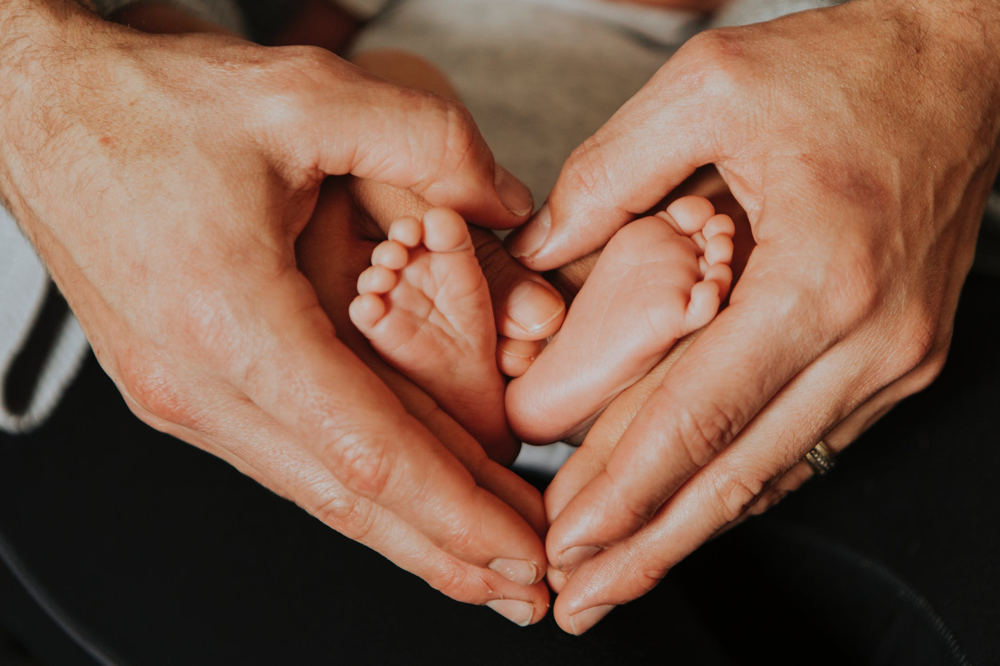

Ultrasound in Motion
For you created my inmost being. You knit me together in my mother's womb.
- Psalms 139:13
Why Choose Ultrasound in Motion?
We understand that you have options when choosing an elective 3D/4D & Vascular Screening ultrasound center. To put your mind at ease, here are some facts about Ultrasound in Motion and their staff. Ultrasound in Motion is operated by registered ultrasound technicians with 45 years of combined experience.
Registered Sonographers - Since we provide quality ultrasound services, we only hire certified sonographers who are accredited through the American Registry for Diagnostic Medical Sonography (ARDMS), Cardiovascular Credentialing International (CCI) or American Registry of Radiologic Technologist (ARRT).
Rest assured that your scan will be performed by an expert sonographer who has considerable experience and knowledge in doing elective and diagnostic ultrasounds. Our technologists have gone through rigorous testing to be registered and maintain active certification. If any problems are seen during your session your health care provider will be notified at once!
We have competitive Pricing and appointments available during the weekday and on the weekends! Plus, we have two convenient locations in Mid County and Beaumont, Texas.
We understand that you have options when choosing an elective 3D/4D & Vascular Screening ultrasound center. To put your mind at ease, here are some facts about Ultrasound in Motion and their staff. Ultrasound in Motion is operated by registered ultrasound technicians with 45 years of combined experience.
Registered Sonographers - Since we provide quality ultrasound services, we only hire certified sonographers who are accredited through the American Registry for Diagnostic Medical Sonography (ARDMS), Cardiovascular Credentialing International (CCI) or American Registry of Radiologic Technologist (ARRT).
Rest assured that your scan will be performed by an expert sonographer who has considerable experience and knowledge in doing elective and diagnostic ultrasounds. Our technologists have gone through rigorous testing to be registered and maintain active certification. If any problems are seen during your session your health care provider will be notified at once!
We have competitive Pricing and appointments available during the weekday and on the weekends! Plus, we have two convenient locations in Mid County and Beaumont, Texas.
Packages

Gender Check: $75 (Beginning at 16 weeks)*
more_horiz
Perfect for the couple looking to validate the sex of their baby!
- 10-15 minute 2D imaging session
- 2D Photo of your baby
$40 discount off Platinum 3D/4D package**
Complete 2D package: $125 (18-26 weeks)*
more_horiz
Perfect for the couple looking to validate the sex of their baby!
- 15-30 minute 2D imaging session
- Photo CD with multiple images for printing or emailing.on
- 3D/4D sneak peek
Basic 3D/4D Package: $145 (26-34 weeks)
more_horiz
The first video and still images of your precious baby!
- 15 minute 3D/4D ultrasound session (2D, 3D & 4D segments, as appropriate)
- Photo of your baby in 3D
- CD with multiple 3D still images suitable for printing and emailing to family/friends and live 4D motion clips of the baby
- Sex Determination* (Upon request)
$20 discount off any future visit**
Gold 3D/4D Package: $165 (26-34 weeks)
more_horiz
The first video and still images of your precious baby!
- 30 minute 3D/4D ultrasound session (2D, 3D & 4D segments, as appropriate)
- Multiple photos of your baby in 3D.
- CD with multiple 3D still images suitable for printing and emailing to family/friends and live 4D motion clips of the baby.
- Sex Determination* (Upon request).
$40 discount off any future visit**
Platinum 2 Visit Ultrasound Imaging Package: $255
more_horiz
Awesome value to see your baby grow!
- A Complete 2D Ultrasound Package is performed at 18 plus weeks during the first visit, while a 3D/4D Ultrasound is performed at 26 – 34 weeks gestation during the second visit. (Twins or multiples should have the 4D Ultrasound Package performed at 24 – 26 weeks gestation.)
- Ultrasound in Motion requests that expectant mothers come in with a full bladder for their 2D ultrasound appointment while really making an effort to hydrate for three (3) days prior to coming for their 3D/4D Ultrasound appointment.
Details
Our Price Match Guarantee
At Ultrasound in Motion we want you to be able to have the best experience in 3D/4D ultrasound at the best price! If you find a competitor’s ad that beats our prices “Apples to Apples” we will match that price for you! Customer must provide proof of competitor’s ad and must be within a 30 mile radius of our facility.
Please Note:
Women seeking an elective prenatal ultrasound with Ultrasound In Motion must already be receiving treatment with a health care provider for prenatal care. At no time is this exam to be used in place of a diagnostic ultrasound.
*If baby is in a good position to see gender
** Discounts applied to regularly priced packages during the same pregnancy only. Not to be applied to any specials/combined with any other coupons or rebates.
Protect Serve & Learn Discount:
Show Military, Police, Fire, or Teacher ID and receive a $10 discount on 3D/4D packages
Our Price Match Guarantee
At Ultrasound in Motion we want you to be able to have the best experience in 3D/4D ultrasound at the best price! If you find a competitor’s ad that beats our prices “Apples to Apples” we will match that price for you! Customer must provide proof of competitor’s ad and must be within a 30 mile radius of our facility.
Please Note:
Women seeking an elective prenatal ultrasound with Ultrasound In Motion must already be receiving treatment with a health care provider for prenatal care. At no time is this exam to be used in place of a diagnostic ultrasound.
*If baby is in a good position to see gender
** Discounts applied to regularly priced packages during the same pregnancy only. Not to be applied to any specials/combined with any other coupons or rebates.
- Twins are $40 extra
- Additional CD and/or DVD - $10
- Gift Certificates are available! Great gift for baby showers!
- No checks accepted. Cash or Credit/Debit cards.
Protect Serve & Learn Discount:
Show Military, Police, Fire, or Teacher ID and receive a $10 discount on 3D/4D packages
FAQs
-
arrow_drop_downWhat’s the best time in the pregnancy for an ultrasound?There are several important factors involved when producing a 3D/4D ultrasound. One factor is the amount of space remaining in the womb. 2D ultrasound sees through everything but when scanning in 3D, everything becomes solid. Therefore things like the umbilical cord or placenta can act as a barrier if sitting in front of the baby. The most optimal time to see the baby is between 26 – 30 weeks because there is still room in the womb. The further into the pregnancy you are, the more the remaining space decreases. Another important factor is how much amniotic fluid is present. It is important to stay hydrated throughout the pregnancy. Extra fluid intake a few days prior to coming in for a 3D/4D baby ultrasound scan is known to help with the clarity of the pictures. The placenta position is another element that affects a ultrasound. An anterior placenta is on the front side of the womb and in front of the baby while a posterior placenta is on the backside of the womb and in back of the baby. With 3D/4D imaging, the posterior is ideal however, it is possible to capture the baby with an anterior.
-
arrow_drop_downCan I bring someone with me?Absolutely! Ultrasound in Motion's 3D/4D Ultrasound studio welcomes family and friends! Our scan room has a 47" high definition television large enough for everyone to view and enjoy seeing the baby.
-
arrow_drop_downWhat is ultrasound imaging?Ultrasound technology uses high frequency sound waves. The waves bounce off tissue and return to the ultrasound machine at different frequencies, depending on the density of the tissue. Our ultrasound machine is a state of the art machine that translates the returning sound waves into images for viewing on its computer monitor. Ultrasound in Motion's 3D and 4D Ultrasound machine is an FDA approved ultrasound machine.
-
arrow_drop_downWhat is the difference between 2D, 3D, 3D Live and 4D?2D ultrasounds are the traditional black & white ultrasounds you have probably seen before. The pictures show the skeletal structure (outline) of the baby. You also get to see the baby moving! This is the type of ultrasound that was probably used for your diagnostic ultrasound. It is still the best technology for gathering measurements of the baby and ensuring that the baby is developing as expected.
3D ultrasounds shows the tissue of the baby, which is more like real pictures. We can see the roundness of the baby's face, the shape of the nose and the contours of the lips. The color is actually not the color of the baby, it is computer enhanced to make the pictures more appealing.
4D live is the same technology. With this technology you can see the motion of the baby. Some companies call it 3D Live and some call it 4D Live. If your baby has a large, clear pocket of amniotic fluid around the face, is moving about and is developed enough, then we can get great clips of your baby moving (4D live). The 4D live clips are typically only a few minutes. -
arrow_drop_downIs it safe? Are there any risks to me, or my baby?Ultrasounds have been used and performed for well over 30 years. Many extensive studies over that time period have shown that ultrasounds are not known to cause any harm to mother or baby. Ultrasounds are a routine procedure that are used all over the country, especially in infertility clinics that specialize in high risk pregnancies. 3D/4D ultrasound is utilized because of the benefit of the clear picture and the fact that it is safe to use. 3D/4D ultrasounds use the exact same type and intensity of ultrasound that is used in conventional 2D scanning
-
arrow_drop_downCan you tell the gender of the baby?We are happy to check gender, and this service is included in all of our packages. We prefer to check gender after the baby reaches 16 weeks. Gender determination cannot be guaranteed, however, since we must rely on the cooperation of the baby and several other factors outside our control. But, if we can not tell the baby's gender, we will bring you back for free!
-
arrow_drop_downWill my insurance pay for my appointment?No, Ultrasound in Motion's elective 3D/4D ultrasounds are not based on medical necessity. They are for entertainment purposes only. This is not to be used as a substitute for doctor's care.
-
arrow_drop_downCan Ultrasound in Motion do Diagnostic Ultrasound Exams?Yes, diagnostic ultrasounds can be done at Ultrasound in Motion for people who don't have insurance and are paying cash for exams. We have board certified radiologists that read the exams. We have competitive cash prices with the area hospitals and outpatient centers. We can meet or beat the best cash price in the area. Call with any questions.